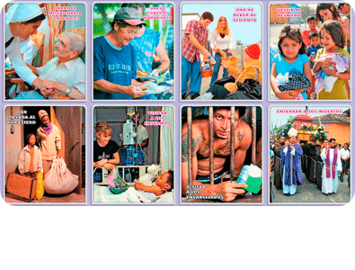

Obras de Misericordia
(Reproducir / Detener)

“Hija mía, si por medio de ti exijo de los hombres el culto a mi Misericordia, tú debes ser la primera en distinguirte por la confianza de mi Misericordia. Exijo de ti obras de misericordia que deben surgir del amor hacia mí. Debes mostrar misericordia al prójimo siempre y en todas partes. No puedes dejar de hacerlo ni excusarte ni justificarte.
Te doy tres formas de ejercer misericordia al prójimo: la primera, la acción, la segunda, la palabra, la tercera, la oración. En estas tres formas está contenida la plenitud de la misericordia y es el testimonio irrefutable del amor hacia mí.
Si el alma no practica la misericordia de alguna manera no conseguirá mi Misericordia en el día del juicio”.
Infinitas son las obras de Misericordia que podemos practicar con nuestro prójimo. No obstante, seguidamente citamos las más comunes, contenidas en el catecismo de la Iglesia Católica.
_
_
- Enseñar al que no sabe.
- Dar buen consejo al que lo necesita.
- Consolar al triste.

- Perdonar las injurias.
- Sufrir con paciencia los defectos del prójimo.
- Confortar al débil.
- Dar de comer al hambriento.
- Dar de beber al sediento.
- Vestir al desnudo.- Dar techo a quien no lo tiene.
- Visitar a los enfermos y a los presos.
- Enterrar a los muertos.
- Liberar a los cautivos de cualquier forma de prisión, material o espiritual.
- Dar limosna a los pobres.
ORACIONES PARA ALCANZAR LA GRACIA DE EJERCITAR MISERICORDIA HACIA EL PROJIMO. (Del Diario de Sta. Faustina)
Deseo transformarme en tu Misericordia y ser un vivo reflejo de ti, oh Señor. Que este más grande atributo de Dios, es decir, su insondable Misericordia, pase a través de mi corazón y mi alma al prójimo.

Ayúdame Señor, a que mis ojos sean misericordiosos, para que yo jamás sospeche o juzgue según las apariencias, sino que busque lo bello en el alma de mi prójimo y acuda a ayudarle.
Ayúdame Señor, a que mis oídos sean misericordiosos, para que tome en cuenta las necesidades de mi prójimo y no sea indiferente a sus penas y gemidos.
Ayúdame Señor, a que mi lengua sea misericordiosa para que jamás critique al prójimo, sino que tenga una palabra de consuelo y de perdón para todos.
Ayúdame Señor, a que mis manos sean misericordiosas y llenas de buenas obras, para que sepa hacer sólo el bien a mi prójimo y cargar sobre mí las tareas más difíciles y penosas.
Ayúdame Señor, a que mis pies sean misericordiosos, para que siempre me apresure a socorrer a mi prójimo, dominando mi propia fatiga y mi cansancio. Mi reposo verdadero está en el servicio a mi prójimo.
Ayúdame Señor, a que mi corazón sea misericordioso, para que yo sienta todos los sufrimientos de mi prójimo. A nadie le rehusaré mi corazón. Seré sincera incluso con aquellos de los cuales sé que abusarán de mi bondad. Y yo misma me encerraré en el misericordiosísimo Corazón de Jesús. Soportaré mis propios sufrimientos en silencio. Que tu Misericordia, oh Señor, repose dentro de mí.
Jesús mío, transfórmame en ti porque tú lo puedes todo.